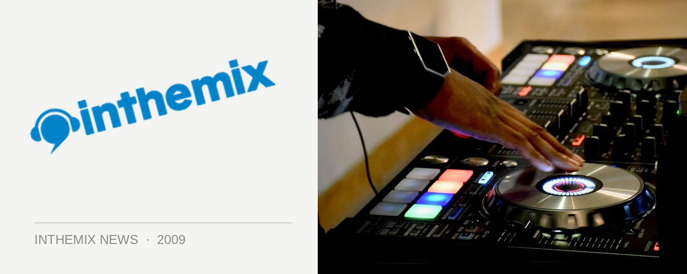

Ferry gives his 'State of The Trance Union'
Trance kicked things up a notch in 2008 with one of the scene’s best years yet, which saw a massive influx of innovative new producers breaking through, and the year was capped off perfectly with veteran Ferry Corsten’s superb Twice In A Blue Moon album. One year on, has the trance scene managed to keep up that same momentum? With the ‘Twice In A Blue Moon: The Experience’ tour landing in Australia this weekend, Ferry recently gave ITM his ‘State of The Trance Union’.
“A year ago I was really saying, ‘hey man, trance is the new sound again’, and it still is, it definitely is. If I compare it to a lot of other styles of music, trance has this perfect balance between a minimal vibe, and full on 140BPM hands-in-the-air trance energy. And you can play everything in between that in your set, and still call yourself a trance DJ,” Ferry told ITM.
“What I do notice again now, and it was the same thing a couple of years ago when trance went all over the top, again a lot of stuff is getting very samey. Everybody is using that same ‘dikka dikka dikka’ sound,” he says, mimicking the techno rhythms that have infiltrated trance over the past few years. “Which is great, but there are so many tracks like that.”
Ferry notes that a lot the new producers trying to break through are reaching for the same techno-trance fusions. “I’d rather see a new guy breaking through with a new kind of sound where everybody is like, ‘oh my god this is awesome’. I’m waiting for the new ‘dikka dikka dikka’ again, and I haven’t seen that yet,” he says.
“If we’re starting to think a year down the road that we’re hearing the same kind of stuff, then maybe it’s time for something new.”
Check out ITM’s audio interview with Ferry Corsten for the full chat, and catch ‘Twice In A Blue Moon: The Experience’ this weekend across the country:
Thu Sep 10 – Brisbane, Family
Fri Sep 11 – Melbourne, Palace Metro Theatre
Sat Sep 12 – Sydney, Hordern Pavilion